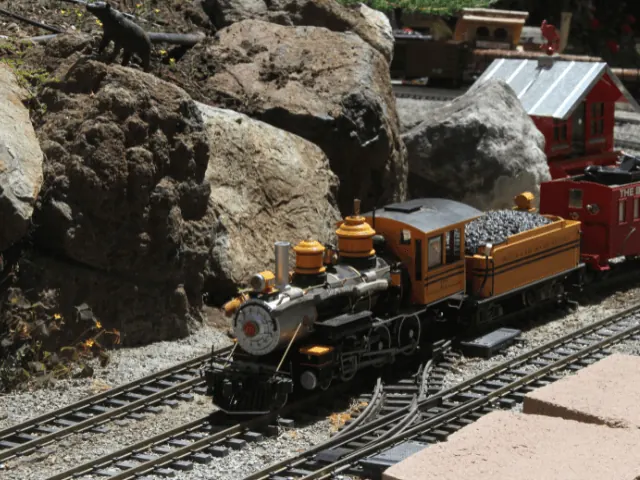
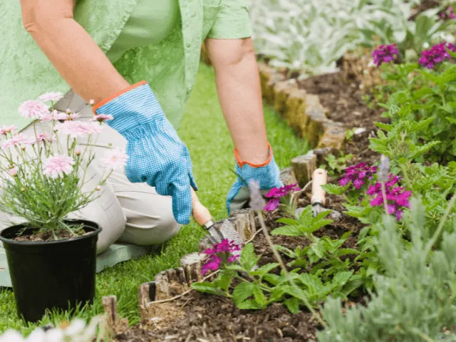
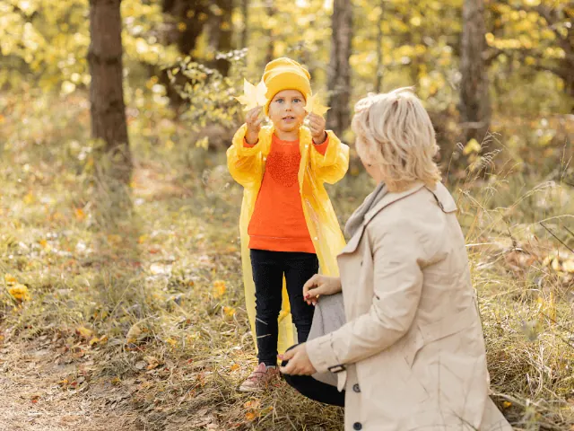

7 Populaire Hobby’s voor Senioren in Nijmegen
Gepubliceerd op 14 november 2023, bijgewerkt op 29 augustus 2024
Onderdeel van de gids Cursussen in Nijmegen
Nijmegen, met zijn rijke cultuur en prachtige landschappen, biedt senioren een scala aan hobby’s om van te genieten. Of u nu op zoek bent naar een rustige, creatieve uitlaatklep of een manier om actief en betrokken te blijven in de gemeenschap, er is voor elk wat wils. In deze introductie verkennen we zeven populaire hobby’s die ouderen in Nijmegen kunnen uitoefenen.
Van de rustgevende tuinen tot de gedetailleerde wereld van modelspoorbouw, deze activiteiten zijn niet alleen vermakelijk maar bieden ook tal van gezondheidsvoordelen. Tuinieren, bijvoorbeeld, is een geweldige manier om in contact te komen met de natuur en biedt zowel fysieke als mentale voordelen. Voor degenen die de voorkeur geven aan een zittende activiteit, bieden breien en haken een kalmerende ervaring en een kans om handgemaakte creaties te delen met geliefden.
Elk van deze hobby’s biedt een unieke kans voor ouderen in Nijmegen om hun vaardigheden te ontwikkelen, nieuwe vrienden te maken en vooral plezier te hebben. Dus, of u nu uw groene vingers wilt testen of de fijne kunst van modelspoorbouw wilt verkennen, er is altijd iets nieuws en opwindends te ontdekken in onze prachtige stad.

Modelspoorbouw in Nijmegen
Dit is het creëren, bouwen en onderhouden van modeltreinen en spoorwegen op schaal. Veel ouderen vinden plezier in het nauwgezette werk dat nodig is om realistische miniatuurspoorweglandschappen te creëren. Deze hobby combineert technische vaardigheden met creatieve ontwerpvaardigheden. Het bouwen van modelspoorwegen kan zeer gedetailleerd zijn, van het zorgvuldig samenstellen van de treinen tot het landschappelijk vormgeven van de omgeving. Het is niet alleen een leuke en uitdagende hobby, maar het biedt ook een prachtige manier voor ouderen om hun handvaardigheid, geduld en aandacht voor detail te benutten. Daarnaast is het vaak een sociale activiteit, waarbij liefhebbers elkaar ontmoeten in clubs of bij tentoonstellingen om ideeën, vaardigheden en ervaringen te delen.
Tuinieren in Nijmegen
Tuinieren is een favoriete bezigheid onder veel ouderen in Nijmegen. Het werken met planten en aarde biedt niet alleen een rustige en therapeutische ervaring, maar helpt ook bij het verbeteren van de handvaardigheid en fysieke gezondheid. Veel senioren vinden voldoening in het zien groeien en bloeien van hun planten, wat een gevoel van prestatie en verbondenheid met de natuur bevordert. Gemeenschappelijke tuinprojecten kunnen daarnaast een sociaal element toevoegen, waardoor ouderen kunnen samenwerken en van elkaar kunnen leren. Tuinieren is ook een geweldige manier voor ouderen om een positieve impact op het milieu te hebben en de biodiversiteit in hun eigen achtertuin te verhogen.
Breien en Haken als één van je hobby’s in Nijmegen
Breien en haken zijn niet alleen traditionele vaardigheden, maar ook uitstekende hobby’s voor ouderen die hun fijne motoriek en concentratie willen behouden. Deze activiteiten bieden een rustige, ritmische bezigheid die kan helpen om stress te verminderen en een gevoel van kalmte te bevorderen. Ouderen vinden vaak vreugde in het maken van unieke, handgemaakte items zoals sjaals, mutsen, en dekens, die ze kunnen delen met familie en vrienden. Breiclubs of groepen bieden sociale interactie en de mogelijkheid om vaardigheden en patronen te delen. Bovendien stimuleert het constant leren van nieuwe patronen en technieken de mentale behendigheid.

Schaken en Bordspellen in Nijmegen
Schaken en andere bordspellen zijn niet alleen vermakelijk, maar ze stimuleren ook het strategisch denken en probleemoplossend vermogen. Deze spellen zijn een uitstekende manier voor ouderen om hun geheugen en cognitieve vaardigheden te onderhouden. Ze kunnen thuis gespeeld worden, of in sociale settings zoals clubs of bijeenkomsten, wat helpt bij het opbouwen van gemeenschapsgevoel. Spellen bieden een vriendelijke competitieve omgeving die intergenerationele interactie kan bevorderen. Regelmatig schaken of bordspellen spelen kan zelfs helpen om bepaalde vormen van mentale achteruitgang te vertragen.
Schilderen en Tekenen in Nijmegen
Schilderen en tekenen zijn fantastische manieren voor ouderen in Nijmegen om hun creativiteit te uiten. Deze vormen van artistieke expressie stellen hen in staat om hun emoties en gedachten uit te drukken op een doek of papier. Het proces van schilderen en tekenen kan therapeutisch werken en helpt bij het verminderen van stress en het bevorderen van mentale helderheid. Of het nu gaat om landschappen, portretten of abstracte kunst, elke creatie is een weerspiegeling van persoonlijke visie en stijl. Kunstklassen en workshops zijn in de regio beschikbaar, waardoor ouderen de kans krijgen om nieuwe technieken te leren en hun talenten verder te ontwikkelen.
Wandelen en Natuurwandelingen in Nijmegen
Wandelen is een zeer toegankelijke activiteit voor ouderen in Nijmegen, met talloze paden en parken in de omgeving. Deze activiteit is niet alleen goed voor de fysieke gezondheid, maar biedt ook de mogelijkheid om de natuurlijke schoonheid van de regio te waarderen. Wandelen kan een sociale activiteit zijn, waarbij ouderen vrienden kunnen maken en ervaringen kunnen delen. Het is ook flexibel, van korte wandelingen in lokale parken tot meer uitdagende natuurwandelingen in de omgeving. Wandelen biedt een unieke combinatie van lichaamsbeweging, frisse lucht en mentale ontspanning, wat het ideaal maakt voor senioren die actief willen blijven.
Lezen en Schrijven in Nijmegen
Lezen is een populaire bezigheid voor veel ouderen in Nijmegen, met een rijke keuze aan boeken, tijdschriften en kranten. Het biedt een kans om te ontsnappen aan de dagelijkse routine en zich te verdiepen in verschillende werelden en verhalen. Voor diegenen die graag schrijven, biedt het bijhouden van een dagboek, het schrijven van verhalen of gedichten een prachtige manier om persoonlijke ervaringen en fantasieën vast te leggen. Schrijven helpt niet alleen bij het behouden van cognitieve vaardigheden, maar biedt ook een persoonlijke en emotionele uitlaatklep. Boekenclubs en schrijfgroepen in Nijmegen bieden sociale interactie en stimuleren discussie en creativiteit, waardoor lezen en schrijven verrijkte ervaringen worden.

Conclusie
In conclusie, de zeven hobby’s die we hebben besproken – tuinieren, breien en haken, schaken en bordspellen, schilderen en tekenen, wandelen en natuurwandelingen, lezen en schrijven, en modelspoorbouw – bieden een rijke diversiteit aan activiteiten voor senioren in Nijmegen. Elk van deze hobby’s biedt unieke voordelen, van het verbeteren van de fysieke en mentale gezondheid tot het bieden van een creatieve uitlaatklep en het bevorderen van sociale interactie. Ze weerspiegelen de gevarieerde interesses en behoeften van de oudere bevolking in de stad.
Het is duidelijk dat deze hobby’s niet alleen de kwaliteit van leven voor ouderen verhogen, maar hen ook helpen verbonden te blijven met hun gemeenschap en hun persoonlijke groei voort te zetten. Of het nu gaat om het cultiveren van een tuin, het creëren van een kunstwerk, of het verkennen van de natuurlijke schoonheid van Nijmegen, deze activiteiten bieden zowel voldoening als plezier. Ze benadrukken hoe belangrijk het is voor senioren om betrokken en actief te blijven, en hoe Nijmegen een ideale omgeving biedt om deze verrijkende hobby’s te beoefenen.
OVERZICHT HOBBYWINKELS IN NIJMEGEN
BEKIJKHobby- en speelgoedwinkels in Nijmegen
Zin om te beginnen? In onze bedrijvengids vind je alle 25 winkels in Nijmegen, met openingstijden, kenmerken en een kaart.
Bekijk alle 25 winkels in Nijmegen
Heb je zelf een winkel? Laat je hier uitlichten.